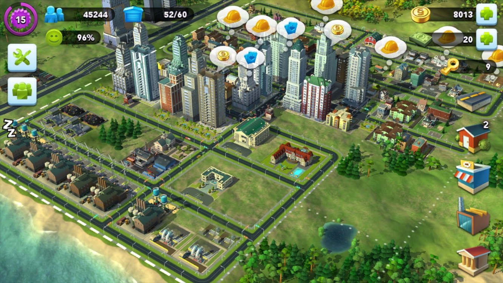
Ti ricordi quei tempi in cui l'erba era più verde, l'internet mobile si pagava a megabyte e Apple era impegnata a dissodare i campi incolti delle fattorie di gaming per smartphone? I primi anni 2010 furono un periodo affascinante, in cui gli studi mobile inventavano interi nuovi generi, cercando di portare o adattare vecchi concetti e giochi, risolvendo lungo la strada problemi che avrebbero fatto contrarre l'occhio a uno sviluppatore desktop. Così EA decise di prendere le franchise di culto SimCity e The Sims, con tutti i loro terabyte di asset e la loro simulazione diabolicamente complessa di strade, ingorghi e singoli Sim, e provare a ficcare tutto quanto nella tua tasca.
Quello che l'utente aveva in tasca allora era un ipotetico iPhone 4 o 5 con quello che già allora era un budget misero di RAM, intorno ai 100–300 MB per assolutamente tutto, ma i possessori di iPhone erano il pubblico "pagante", quindi la divisione gaming puntava soprattutto a loro. Come si fa a evitare che uno smartphone si trasformi in una stufetta e prenda un OOM nei primi minuti di gioco? Butti nella spazzatura la simulazione onesta, trasformi i Sim in macchine a stati finiti e rendi la città un'astuta illusione fatta di atlanti di texture e timer. Lascia che ti racconti un po' come è costruita SimCity BuildIt sotto il cofano. Non ci sarà quasi codice, e qui non serve per capire le idee. Alla fine dell'articolo ci sarà un po' di malinconia sulla divisione russa di EA, più foto della chiusura dell'ufficio nel 2016.
Il ruolo dello studio di San Pietroburgo di EA, EA SPB
Quando parliamo di SimCity e The Sims per mobile, nei crediti compaiono spesso brand globali come EA Tracktwenty (Helsinki) o Maxis, ma una grossa fetta del lavoro hardcore e della magia ingegneristica è stata in realtà forgiata in Russia, dallo studio di San Pietroburgo EA SPB (Electronic Arts Saint Petersburg).
Mentre i colleghi d'oltremare si concentravano di più sul game design, sulle metriche di prodotto e sulla logica di alto livello, agli ingegneri di Pietroburgo toccò il lavoro più interessante e tecnicamente importante: combattere contro l'hardware debole e ricostruire le fondamenta tecnologiche delle versioni mobile.
Il team di Pietroburgo era responsabile della costruzione e della manutenzione dei pipeline interni di contenuti (Internal Tools). È qui che veniva creato e faceva evolvere il pesante strumentario di build, e in pratica scrissero i tool che prendevano il contenuto "pesante" da PC prodotto dagli artisti di tutto il mondo e lo macinavano in formati ottimizzati per iOS e per centinaia di capricciosi dispositivi Android.
Il secondo compito era la creazione di modelli di dati ibridi: fare in modo che il client mobile girasse in modo fluido, mettesse in cache i dati offline, ma comunicasse comunque senza intoppi con il server, trasferendo dati e respingendo i cheater.
E poi, naturalmente, l'ottimizzazione per il mercato mobile, perché adattare un gioco a un singolo iPhone di punta è già un compito non banale, dato che anche un flagship sarà "anemico" rispetto a un PC debole. Era ancora più difficile far sì che SimCity BuildIt garantisse FPS stabili su tablet Android/iOS, che a causa dei loro schermi più grandi richiedevano texture più dettagliate pur avendo la stessa quantità di memoria. Così il team rielaborava a mano gli shader per l'architettura mobile e letteralmente spazzava la RAM chilobyte per chilobyte, salvando il gioco dal patibolo dell'OOM. EA SPB creava quella stessa tecno-magia "invisibile" che permise alla franchise di essere lanciata sugli smartphone.
L'illusione di una metropoli viva
Il gioco iniziò come un port diretto della versione PC di SimCity 2013, proprio quella che seppellì la serie con le sue nuove meccaniche. Lo fecero perché il framework interno, con un po' di esperienza e qualche danza col tamburello, permetteva di assemblare una versione mobile. Finì tutto alla primissima demo, perché era un suicidio tecnico: il gioco PC cercava di simulare onestamente ogni ometto che andava al lavoro, spendeva elettricità per fabbricare chiodi e creava ingorghi. Su mobile, questo approccio raggiungeva l'inaudito risultato di 2 FPS e faceva fondere il chipset.
Per evitare che il gioco trasformasse il telefono in una filiale tascabile di una centrale elettrica, l'architettura fu spezzata in due livelli indipendenti (in realtà di più, ma qui a noi ne interessano due), cambiando completamente l'approccio classico alla simulazione di city-building.
PC SimCity (GlassBox):
[Person] -> [Finds path] -> [Logic computation] -> [Render]
Mobile SimCity BuildIt:
[Server Timer] -> [Condition check] -> [Visual trigger: spawn a little car]Oggi il design server-authoritative nei giochi mobile è lo standard, ma nel lontano 2010 una simile divisione era una mossa d'avanguardia, perché l'industria aveva appena trovato il proprio equilibrio sui binari del f2p. Non ancora svezzata dagli idiomi da PC, la maggior parte degli sviluppatori cercava ancora, alla vecchia maniera, di calcolare tutto localmente sul dispositivo, scaricando sul server solo piccoli blocchi JSON o i salvataggi finali.
Perciò l'idea di spendere capacità server reale e costosa (al picco dell'interesse per il gioco, far girare i server costava intorno ai 40k$ al giorno) e tempo CPU dei data center per simulare Sim o fabbriche virtuali era considerata un lusso e una follia imperdonabili. Per SimCity era giustificato, e spostare il 99% dei calcoli sul server, togliendo la pura matematica dal mobile, alla fine si rivelò più economico di una battaglia infinita contro bug, OOM e cheater.
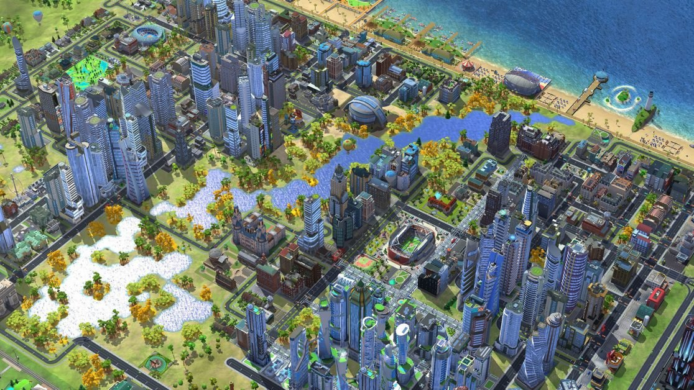
Il secchio dell'economia
In pratica, tutta la complessità matematica ed economica fu spostata interamente dal dispositivo dell'utente ai server, e poiché il server non ha bisogno di grafica e opera puramente su relazioni, ID e timer, tutta la complessa economia della tua città si trasforma in un array piatto di tabelle di config in stile JSON o key-value, con liste di coordinate degli edifici, livelli di upgrade, code di produzione e stato del magazzino delle risorse.
Tutto questo si incastra a meraviglia in un database specializzato in grado di generare eventi sui timer, e quando avvii la fusione di un chiodo in una fabbrica, tutta la validazione e la logica le fa il backend. Il client di gioco in sostanza elabora la pressione di un pulsante, inviando un semplice JSON su chi ha premuto cosa e dove, mentre il server addebita il metallo, registra il timestamp dell'inizio del processo e avvia un timer. Il processo di "produzione" stesso si riduce al ticchettio dell'orologio del server, e il dispositivo del giocatore non ha bisogno di calcolare la logica dell'edificio, la logistica degli operai o i costi dell'elettricità di gioco; in linea di principio non gli serve più nulla, tranne i modelli 3D degli edifici e i fumetti dell'UI.
In questa coppia, lo smartphone si è trasformato in un terminale "stupido" ma molto grazioso, il cui unico compito è visualizzare i numeri del server sotto forma di casette carine e mettere in cache localmente lo stato per minimizzare il traffico di rete. Internet non è sempre disponibile, e per evitare che il gioco "balbetti" con una brutta connessione 2G (e ce n'era più che a sufficienza, con una velocità media di scambio col server di qualcosa come 16 KB/min — non al secondo! — per client), il client non aspetta una risposta del server per ogni sciocchezza e conserva una copia locale dello stato della città; anche senza connessione il contatore di tempo locale continua a scorrere e mostra un'icona "Pronto" — solo che non potrai toccarla.
Incassare quel chiodo nell'economia e spenderlo per l'upgrade di una casa non funzionerà senza connessione; quando sei connesso, il server confronta l'ora di sistema attuale con quella salvata, e se il giocatore ha provato a spostare in avanti l'orologio del telefono, riporta indietro il chiodo. Questa funzione non funzionava per il mercato cinese a causa di problemi di accesso ai parametri del dispositivo, che lì includevano anche l'ora locale. Ma i giocatori cinesi erano comunque su server separati, quindi non era un gran problema.
[CLIENT: Press "Craft"]
|
v (Network request: "I want a nail")
[SERVER: Resource validation] ---> [Write to DB: Smelting started] ---> [Start server timer]
|
[CLIENT: Draws local cache] <--- (Server response: "Success, wait 5 minutes") <--+Rendering
Disegnare centinaia di edifici sulla GPU mobile di quegli anni è già un compito non banale, e per tenere gli agognati 60 fotogrammi al secondo, o anche solo 30, su architetture al livello dei primi chip Apple o della grafica Mali/Adreno, si dovette ricorrere a vari trucchi di rendering.
I chip grafici mobile sono costruiti in modo diverso dai mostri desktop, e usano l'architettura TBDR (Tile-Based Deferred Rendering). Il chip video non calcola tutto lo schermo in una volta; lo suddivide in piccole "tile" ed elabora ogni tile separatamente. Se sommergi un chip del genere con geometria caotica dell'intera città, nello spirito del rendering ordinario della build PC di SimCity, semplicemente si strozzerà, restituendo quegli stessi agognati 2 FPS.
Perciò la metropoli è spezzata in rigidi blocchi spaziali, e l'intera mappa è divisa in settori. Per ogni settore l'engine calcola la distanza dalla camera e l'angolo di visuale, e se questi non cambiano, viene creata una mini texture di preview che permette di mostrare il settore tramite blitting 2D anziché con geometria completa — è una sorta di LODding molto aggressivo, che funziona in modo tanto più evidente quanto più debole è il tuo dispositivo.
E se sullo schermo bisogna disegnare un grattacielo complesso fatto di centinaia di poligoni, con i condizionatori sul tetto e piccole antenne, allora per esso veniva creata a parte una texture "con tutto", che si poteva stendere su una scatola, e ora sullo schermo dello smartphone questo oggetto occupa al massimo 20 pixel, il giocatore non nota il trucco, e la banda di memoria si risparmia enormemente. E solo se ingrandisci molto un edificio inizia a essere disegnata la geometria reale degli oggetti.
Batching aggressivo
Un altro dei trucchi del gioco. Se hai 200 elite townhouse piazzate nella tua città e l'engine fa 200 Draw Call, allora anche se il gioco non si trasforma in una presentazione di diapositive, sarà comunque molto scattoso. La soluzione fu il batching totale e senza compromessi di tutto e di più, e quando piazzi case residenziali o posi strade, il gioco non le tratta come oggetti separati.
Una volta ogni pochi secondi, di solito quando il giocatore apre vari menu a schermo intero, l'engine prende la geometria dei diversi oggetti statici, fonde i loro vertici in un unico gigantesco array di vertici e ottiene 200 oggetti che vengono disegnati in 1 passata invece che in 200.
Perché il batching funzioni, gli oggetti devono condividere lo stesso materiale grafico, così gli artisti impacchettavano le texture di diversi edifici, alberi e segnali stradali in atlanti di texture, e ne avevi diversi, di questi atlanti, per i vari set di edifici, perché assemblare la geometria era fattibile, ma assemblare l'atlante nel modo giusto era il problema. Alla fine tutto veniva disegnato come un singolo oggetto con una singola texture, anche se sullo schermo era visualizzato mezzo isolato residenziale.
L'era di OpenGL ES 2.0/3.0 fu un periodo di limiti severi sul numero di istruzioni negli shader di pixel e di vertici, e in un city-builder mobile di quegli anni non potevano esserci rendering onesto, illuminazione globale o ombre dinamiche. E perché far calcolare al telefono come la luce del sole cade sul cornicione di una casa, se il sole nel gioco si muove secondo uno script rigido?
Tutte le ombre, i piccoli ombreggiamenti alle giunzioni dei muri e i riflessi venivano "cotti" in modo permanente nelle singole texture dell'edificio, ed essenzialmente tutti gli edifici del gioco sono scatolette pre-dipinte il cui shader si limita a restituire un'immagine già pronta senza complessi calcoli matematici dell'illuminazione.
Per implementare il cambio dell'ora del giorno senza sorgenti di luce dinamiche, nello shader veniva integrato il più semplice blending (miscelazione). Un edificio aveva due texture — una diurna e una notturna, in cui nelle finestre sono disegnate luci gialle — e lo shader eseguiva un'interpolazione lineare tra di esse.
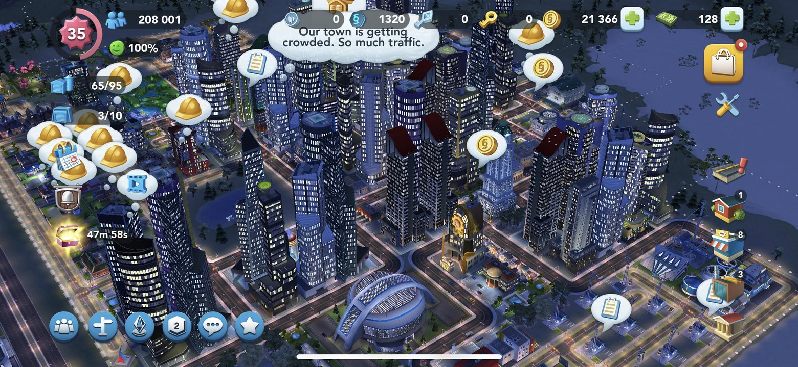
E allora dov'è la simulazione?
I fan dell'originale SimCity per PC (in particolare l'hardcore SimCity 4 o lo sfortunato SimCity 2013) si erano abituati all'idea che sotto il cofano del gioco pulsasse una logica potente che simulava un gran numero di sistemi. Il nucleo matematico delle versioni desktop calcolava milioni di parametri interconnessi; SimCity 4 aveva più di ottomila sistemi (un segmento di strada, una caserma dei pompieri, l'auto di un Sim, una fabbrica in funzione, un segmento di tubatura o un traliccio dell'alta tensione con la sua area di inquinamento) che influenzavano la città, più di 10.000 oggetti attivi sulla mappa, e persino un singolo camion dei pompieri faceva la sua parte nella città creando ingorghi sulle strade.
In SimCity BuildIt, tutto questo modello complesso e da divulgazione scientifica fu semplicemente "azzerato", e la simulazione come processo fisico-matematico continuo fu completamente tagliata via, sostituita da trigger cosmetici basati sugli eventi. La vera economia del gioco si trasformò in un sistema piatto di code, timer e incrementi, e per cogliere la portata di questa indecenza, basta guardare gli ingorghi.
Su PC, l'engine GlassBox calcolava ogni residente: un Sim usciva di casa, saliva in auto, l'algoritmo tracciava un percorso lungo la griglia stradale fino al posto di lavoro, e se a un incrocio si ammassavano molti agenti fisici reali, si formava un ingorgo. Le auto si fermavano, il Sim arrivava tardi al lavoro, la fabbrica subiva perdite, la città non incassava tasse.
Sugli smartphone, gli ingorghi diventarono un effetto puramente visivo basato su una formula statistica legata al livello di upgrade della strada. Ogni tile di strada aveva due parametri: la densità di popolazione entro un raggio X, e il livello di upgrade della strada (2 corsie, 4 corsie, ecc.), e se il rapporto tra densità e larghezza della strada superava una certa soglia, scattava il trigger SPAWN_MORE_RED_CARS.
E quelle macchinine erano solo sprite decorativi che si muovevano lungo una spline in loop all'interno del tile stradale. Non stanno andando da nessuna parte, non hanno una destinazione e non influenzano in alcun modo l'economia della fabbrica.
E un altro esempio: quando su un incendio casuale un camion dei pompieri fisico usciva dalla caserma. Cercava un percorso lungo le strade, incappava negli ingorghi, perdeva tempo, e se rimaneva bloccato, la casa bruciava, trasformandosi in rovine che bisognava spazzare via col bulldozer.
Ora la caserma dei pompieri è diventata un emettitore statico di una zona di copertura con Radius = 10, e quando piazzi l'edificio il gioco si limita a verificare l'intersezione del raggio con le coordinate delle case residenziali. A tutte le case entro il raggio viene assegnato nel database lo stato is_protected = true, e se una casa non è nel raggio, sopra di essa si accende un'icona di scontento dei residenti, che blocca l'upgrade. Su mobile non ci sono incendi fisici, e il grazioso camion dei pompieri che ogni tanto esce dal cancello con la sirena è solo un'animazione di sfondo casuale che crea l'illusione di una frenetica attività dei servizi.
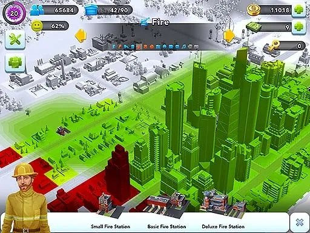
Elettricità e approvvigionamento idrico
Su PC, le risorse venivano consegnate tramite connessioni fisiche, e l'elettricità si diffondeva dalla centrale lungo le linee ad alta tensione o da edificio a edificio secondo il principio delle "zone di contatto", mentre l'acqua scorreva attraverso tubi che bisognava posare, e quando non c'era abbastanza capacità, i quartieri periferici della città restavano senz'acqua o piombavano nel buio.
Dimenticati di fili e tubi su mobile; ora l'elettricità è il più semplice problema di sottrazione, in cui la città ha un pool globale di energia con Capacity = 100, e ogni casa costruita si limita a consumare stupidamente un numero fisso di unità, Demand = 1.
Quando la scena si aggiorna, il gioco esegue l'operazione Capacity - Demand, e se il resto è maggiore di zero, la casa è istantaneamente "alimentata", ovunque si trovi sulla mappa, anche all'estremità opposta rispetto alla centrale. Nessuna rete fisica, nessun calcolo di attenuazione e perdite come c'era nella versione PC.
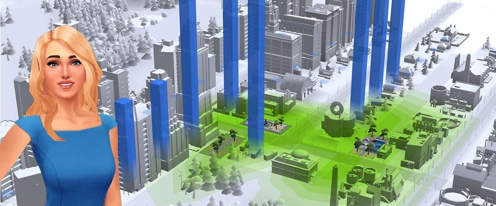
Commercio e mercato globale
Su PC, SimCity 2013 aveva un mercato globale delle risorse in cui i prezzi cambiavano dinamicamente a seconda della domanda e offerta reali di migliaia di giocatori da tutto il mondo, e c'erano server economici separati che facevano girare le quotazioni di carbone, minerale e processori. Ma il mercato globale nel gioco mobile è diventato una bacheca annunci mascherata, con limiti rigidi e corridoi di prezzo.
Quando qualcuno metteva in vendita dei chiodi, il server non ricalcolava il bilancio globale della domanda, perché operava entro i confini del gruppo in cui eri stato inserito quando il tuo client si era collegato alla rete. Potevi impostare un prezzo solo entro un intervallo, diciamo da 10 a 80 Simoleon, e se nessun altro giocatore reale acquistava l'oggetto entro un certo tempo, il gioco avviava automaticamente un bot di nome Daniel che ti comprava il lotto al prezzo medio. Non è nemmeno un simulatore economico, ma un normale sistema di code con esito garantito, mascherato da mercato vivo. Cinque anni dopo il lancio del gioco, EA provò a introdurre qualcosa di simile a un vero mercato di gioco, ma i giocatori si erano ormai talmente abituati al modello semplificato che venne annullato due settimane dopo il lancio.
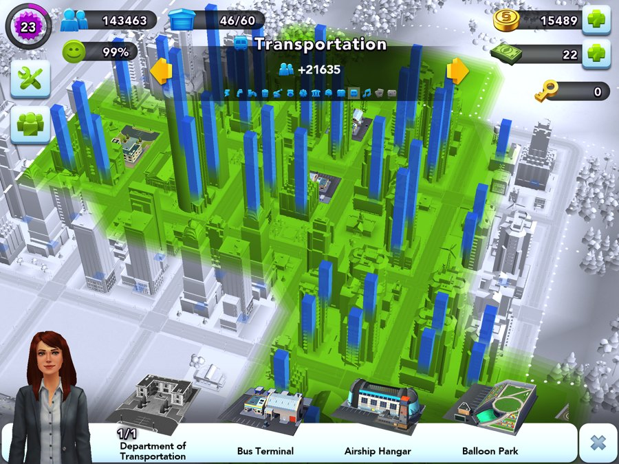
Le foto promesse
Lo studio EA St. Petersburg (EA Spb) è stato, forse, uno dei posti più pieni di anima in cui mi sia capitato di lavorare. Si formò inizialmente attorno allo sviluppo mobile, e l'ufficio di Pietroburgo si occupava dell'operating, dello sviluppo e del supporto di vari giochi, inclusi progetti delle serie The Sims, Tetris e Star Wars, ma nella prima metà degli anni 2010, nell'ambito di una ristrutturazione, EA decise di chiudere tutto il suo sviluppo interno ufficiale in Russia.
Oltre a San Pietroburgo, c'erano anche uffici a Mosca e Taganrog. A Mosca aveva sede il principale ufficio commerciale e di marketing per la CSI, che si occupava di localizzazione, PR e organizzazione di lanci come Battlefield o FIFA, oltre al supporto della community di gioco.
La comparsa di EA a Taganrog fu una straordinaria storia di successo dell'IT regionale, e cominciò con l'azienda locale di outsourcing Spira (Spira Computer Software), che svolgeva compiti ingegneristici e QA per gli americani così bene da finire per essere assorbita completamente da EA. Al suo picco l'ufficio di Taganrog contava più di 100–150 persone; con contractor e tester la cifra si avvicinava a 200, e per la regione era un datore di lavoro di prim'ordine con una cultura da Silicon Valley. Se metti insieme tutte e tre le sedi al picco della loro attività, all'incirca 2011–2013, si arriva all'ordine di 250–300 persone.
- EA Spb (Pietroburgo): ~70–100 persone (ingegneri, artisti, producer, QA).
- EA Taganrog: ~150 persone (devops, sviluppatori web, supporto).
- EA Mosca: ~40 persone (marketing, localizzazione, management).
C'era anche del merch fico come felpe, magliette e zaini brandizzati con dentro souvenir che facevano cin cin — a proposito, la mia maglietta e la mia felpa sono ancora vive a oggi. Non scriverò del team affiatato, delle uscite al pub, delle tradizioni del venerdì e degli eventi di Capodanno come forma d'arte a sé stante; è troppo triste da ricordare. Le foto sono prese dalla pagina di Slava "Copperfeet" Mednonogov (copperfeetgames.com), un'altra leggenda non solo dell'ufficio ma anche della scena ZX Spectrum di Pietroburgo.
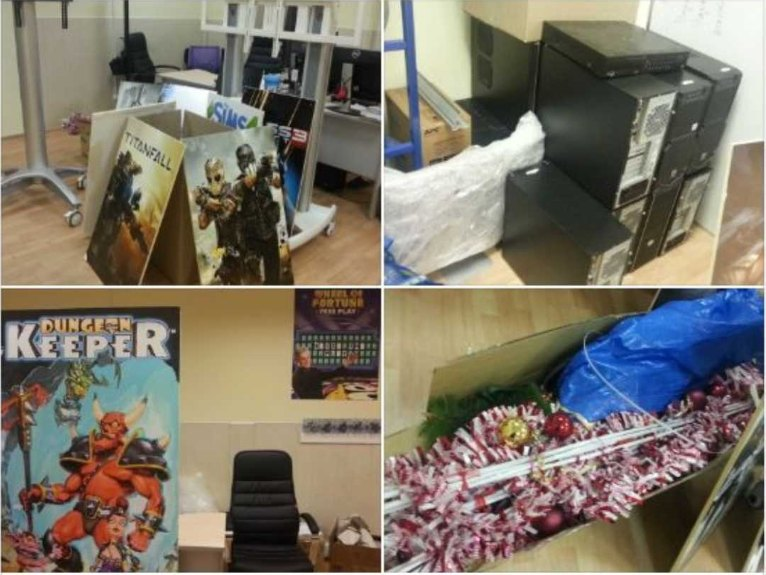
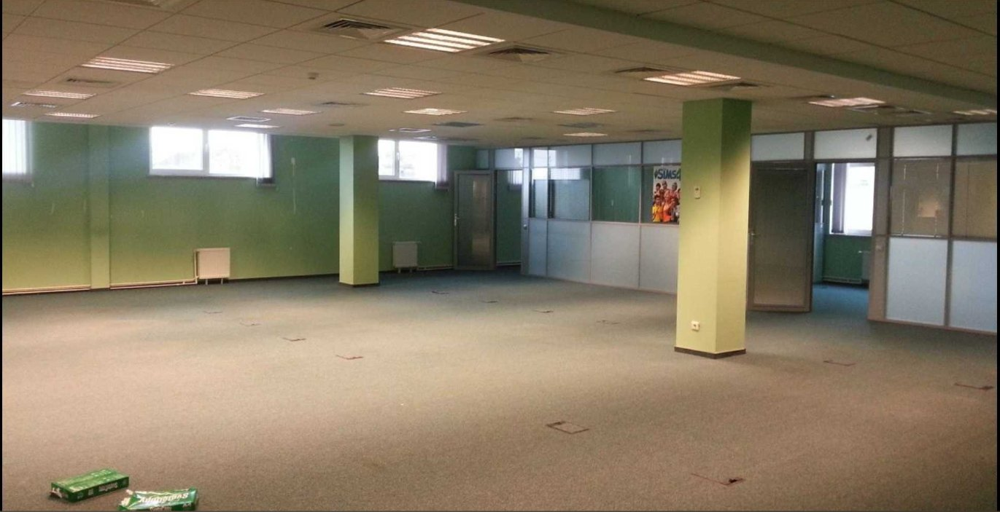
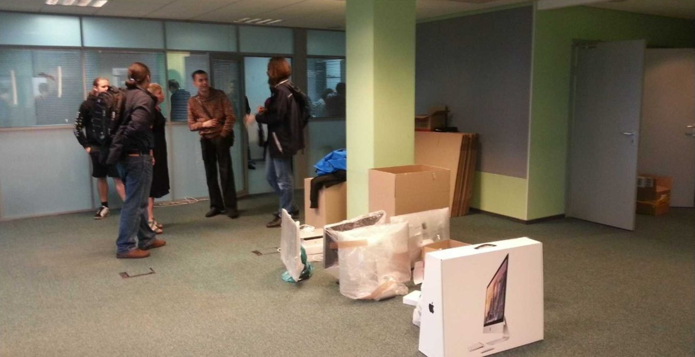
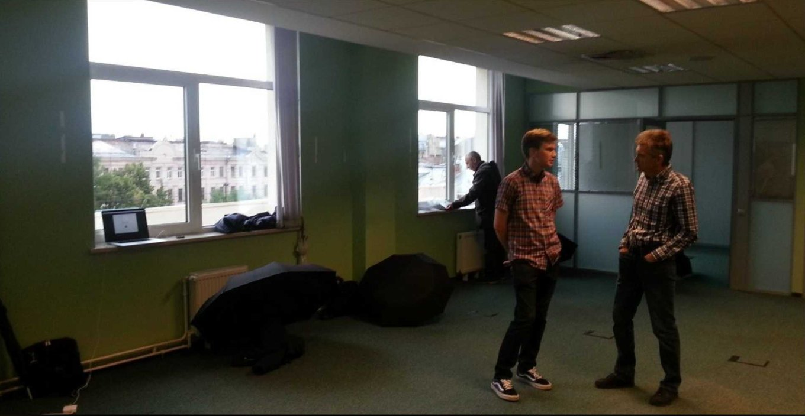
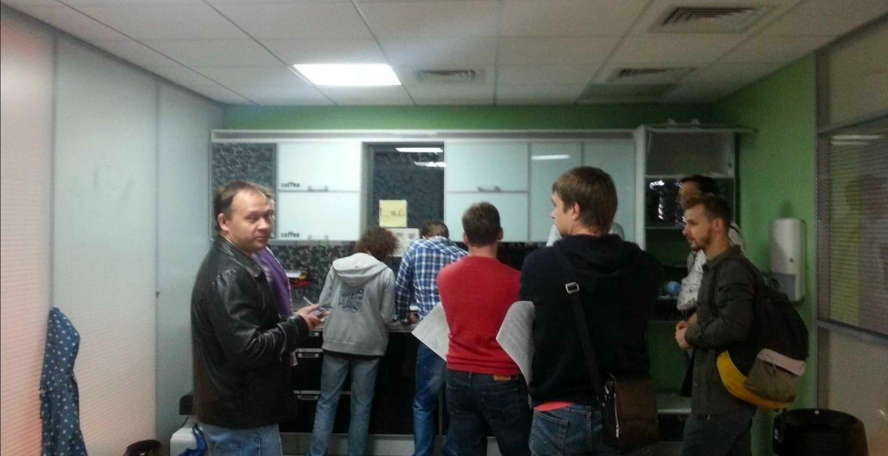
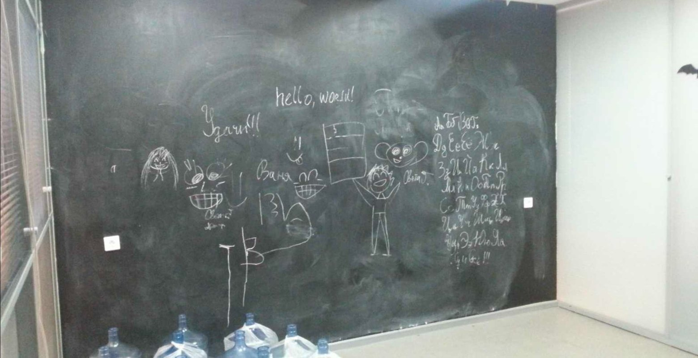
← Tutti gli articoli